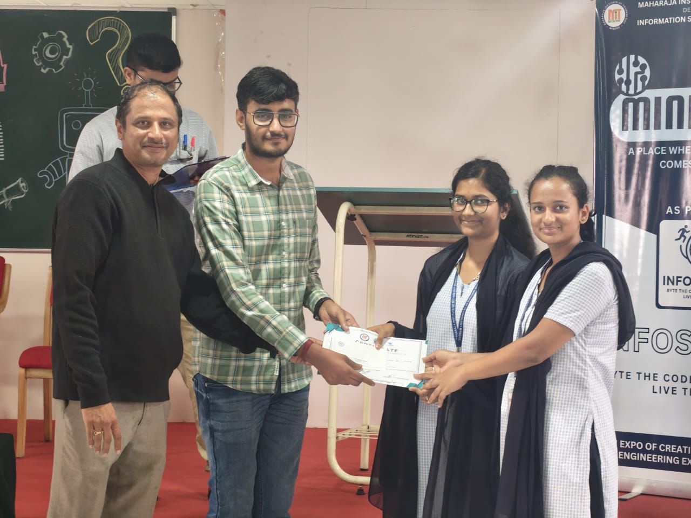
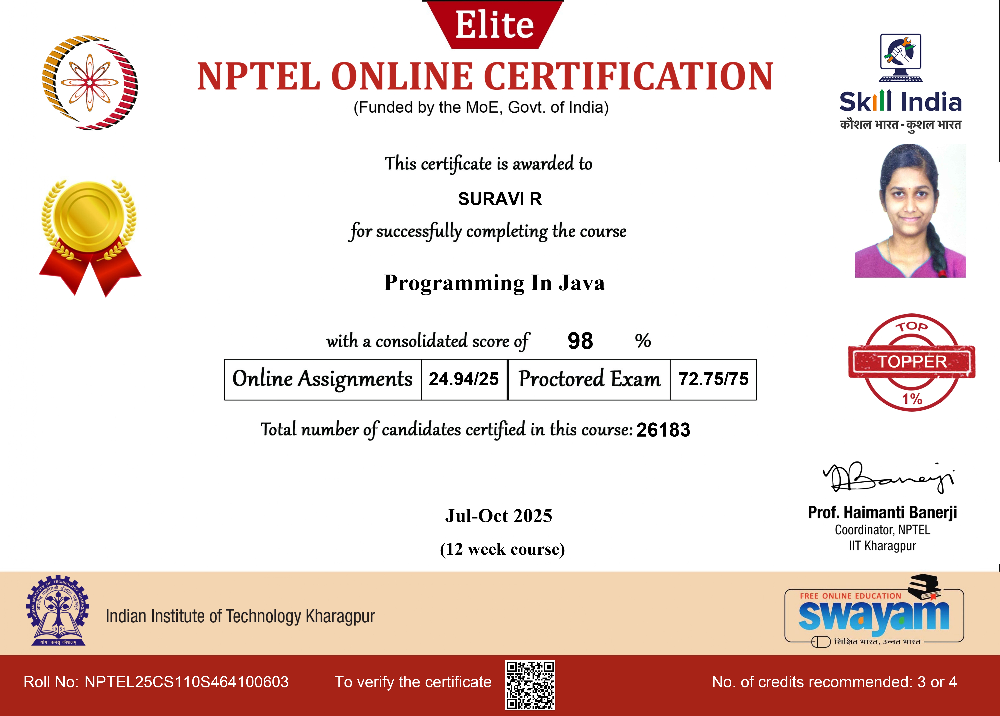
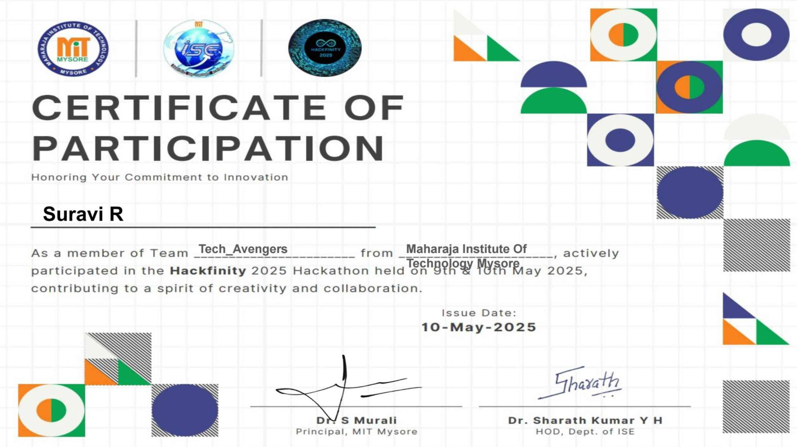
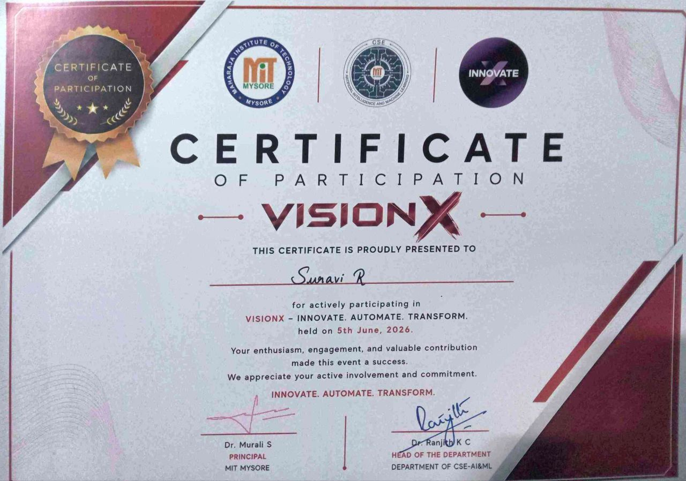
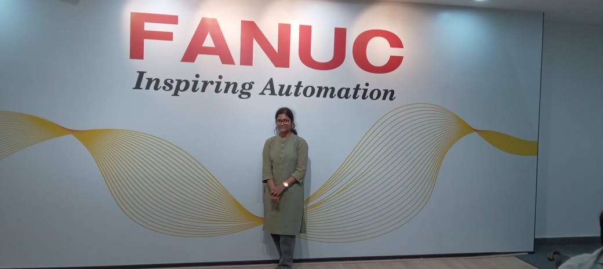
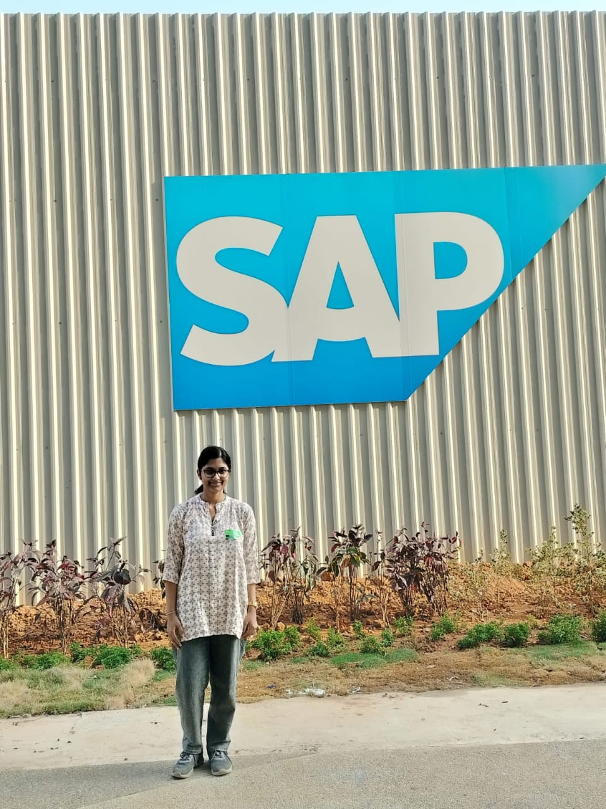

Hi, I'm Suravi R
Engineering
Information Science & Engineering student passionate about AI, DevOps, and building innovative solutions
About Me
Who I Am
I am an Information Science & Engineering student focused on building intelligent software systems using AI, backend engineering, and modern development practices. I enjoy solving practical problems through software engineering.
Vision
To become a Software Engineer specializing in AI-powered applications and intelligent systems, building scalable and impactful solutions that solve meaningful real-world problems.
Experience & Internship
Future Interns
Web Development Intern (Aug – Sep 2024)
Built responsive interfaces, improved JavaScript interactions, and enhanced user experience on production-ready web applications.
Ongoing Major Project
AI Powered Lab Programming Assistant
Building an interactive AI-driven EdTech system that guides students through logic building, code understanding, and viva preparation using intelligent AI-powered workflows.
Impact Delivered
Focused on building intelligent software systems and backend solutions that solve meaningful real-world problems, rather than just showcasing technologies.
My Journey
Education • Growth • Hackathons • Industry • Awards
B.E. ISE
Maharaja Institute of Technology Mysore
CGPA: 9.16NPTEL Java
Top 1% Nationwide
98% Score (Gold Medal)Awards
2 Project Prizes
Mini & BestEarly Curiosity
Introduced to programming through C++ in 11th grade, sparking a lasting passion for computer science, logical problem-solving, and building intelligent systems.
Web Foundations
Mastered HTML and CSS fundamentals, discovering how design and functionality create engaging user experiences and practical web solutions.
Programming Fundamentals
Strengthened core programming skills with C and Python, focusing on algorithms, data structures, and robust software logic essential for backend engineering.
Exploring Computer Science Depth
Delved into Data Structures, Algorithms, Operating Systems, DBMS, and Computer Networks, developing a deep fascination for system architecture and backend engineering.
Real World Development
Built and deployed a responsive website for Stepping Stone Academy using Netlify, gaining hands-on experience in practical web development and deployment.
Building Practical Projects
Developed complex applications, including a full-stack e-commerce platform, mastering robust backend engineering and scalable frontend-backend integration.
Innovation & Recognition
Created the Smart Automated Timetable Generator, an intelligent system handling real college constraints. Won 2nd Prize at the Mini Project Expo.

Social Impact Projects
Built HerbAura – Virtual Ayurvedic Knowledge Platform, a 3D interactive garden using Three.js with AI-powered features to gamify and spread awareness about traditional Ayurvedic medicinal plants.
AI & Intelligent Systems
Leveraged AI & ML to build a Waste Segregation System with voice assistance, earning the Best Project Award. This project showcased practical AI application for real-world problems.

NPTEL Excellence - Top 1% Nationwide
Scored an exceptional 98% in NPTEL's "Programming in Java", ranking in the Top 1% nationwide and earning a Gold Medal. This solidified my object-oriented design and algorithm expertise.

Continuous Growth
Currently undergoing industry training in Generative AI and preparing for placements. Continuously exploring advanced software development, intelligent systems, backend engineering, and scalable applications. The journey continues with new challenges and innovative solutions.
Hackathons

AgroForeCast - MIT Mysore Hackathon (AI for Agriculture)
Maharaja Institute of Technology Mysore
Developed AgroForeCast to help farmers combat crop loss from sudden weather changes. Our app provides localized weather updates and crop advice. Focused on full-stack integration using HTML, CSS, JS, and Python, bringing the idea to life in just 24 hours.

HerbAura – Virtual Ayurvedic Garden - VEC Hackathon (3D & AI)
Vidyavardhaka Engineering College | Oct 11-12
Built an immersive Virtual Garden using Three.js to explore 3D Ayurvedic plant models. Features an AI-powered Khashayam Maker that scores herbal combos, interactive quizzes, and memory games to make learning engaging for all ages.

OneMysuru - Build for Mysuru (Entrepreneurial & Strategy)
Dept. of CSE-AIML MIT Mysore
Designed and pitched OneMysuru—a platform connecting tourism, events, local businesses, artisans, and citizens through a unified digital ecosystem. Gained experience in entrepreneurial thinking, branding, and business strategy.
Industry Exposure

FANUC India
Industrial Robotics & AutomationGlobal Leader in Factory Automation
Learned how FANUC powers intelligent manufacturing worldwide through advanced robotics, CNC systems, and factory automation.
Key Learnings:
- Advanced robotics and industrial automation systems
- CNC machining, precision manufacturing, and automated assembly lines
- Integration of AI in production lines
- Real-world applications of IoT in factories

SAP Labs
Enterprise Software & Cloud PlatformsTransforming Business Through Innovation
Explored SAP's cloud-based ERP solutions and learned how Fortune 500 companies optimize operations and data at scale.
Key Learnings:
- Enterprise Resource Planning (ERP) architecture
- Cloud-based business solutions, SaaS models, and large-scale backend systems
- Large-scale software development practices
- Integration of AI and analytics in business software
IBM Meetup
Agentic AI & Developer ProductivityThe future is Human + AI + Agents
Discovered how Agentic AI transforms software engineering. Gained insights into building reliable AI agents, LLM security, and using AI tools to boost developer productivity.
Key Learnings:
- Building reliable and efficient AI agents
- Security aspects (OWASP Top 10) for LLM Apps
- Reducing repetitive work using IBM BOB
- Future of Human + AI collaboration
Featured Projects
Smart Automated Timetable Generator
AI-powered timetable scheduler using Genetic Algorithms to eliminate faculty clashes and optimize room and resource allocation.
AI Powered Lab Programming Assistant
Guided Socratic AI lab assistant that fosters logic building, plain-English error debugging, and Viva exam preparation.
DARTX – Smart Dependency Manager
Intelligent VS Code extension that silently detects environment dependency issues, maps aliases, and resolves packages.
Stepping Stone Academy Website
Responsive Montessori school website with intuitive navigation, admissions details, and high-performance layout.
HerbAura – Virtual Ayurvedic Knowledge Platform
3D Ayurvedic platform with Three.js plant exploration, AI Kashayam maker, interactive memory games, and botanical quizzes.
Technical Skills
Programming & Web
Frameworks & Databases
Tools & Core Concepts
Certifications
Get In Touch
Let's connect and discuss full-time software engineering roles, internships, or innovative projects!